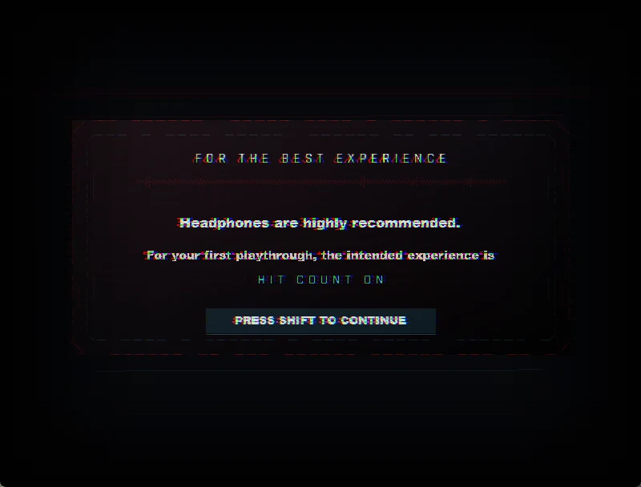

WHAT THIS IS
One song. Two minutes and five seconds. Thirty attacks, all of them built to the beat.
Bassline Crack is an avoidance. The whole level is one track, every hazard is timed to it, and it runs start to finish without a break. You don't shoot anything and you don't have health.
Every attack warns you before it can hurt you. Red means it will kill you. Cyan means it can't.

HIT COUNT
Getting hit costs you a point and the run carries on, so you always reach the end. Your score is how few times the song caught you. This is how the game asks you to play it first.
LETHAL
One touch ends the run. This is why the hub has a practice room with every section on its own shortcut.
THE RUN
Everything below happens in the order it happens, at the frame it happens.
DOWNLOAD
+
DOWNLOAD
- Unzip and run
Bassline Crack.exe. Nothing is installed. - Arrow keys move, Shift jumps, R retries. Gamepad is supported.
- Headphones recommended. The whole level is the song.